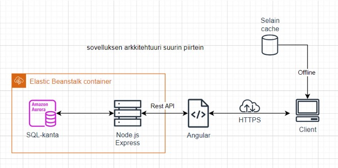
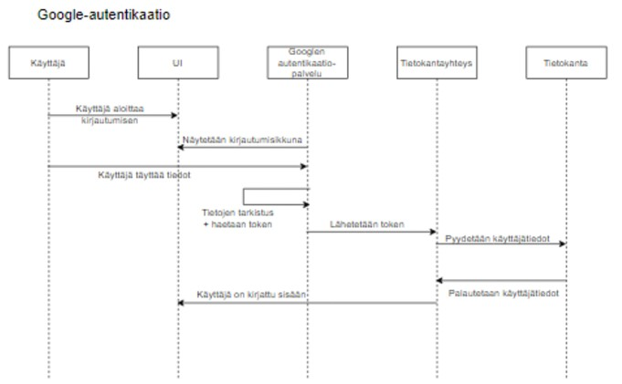

Yleisesti
Aloittaessani kurssin en osannut sanoa kovin tarkasti mitä tavoitteita minulla oli. Olin valmis tekemään kaikkia tehtäviä ryhmässä. Ajattelin kuitenkin, että olisi kiinnostavaa tehdä tietokantaa ja backendia tai jotain liittyen UI/UX:än tekniseen toteutukseen ja käytettävyyteen.
Alun ideointi
Alun brainstormauksen jälkeen oma ideamme ei päätynyt jatkokehitykseen, mutta mielestäni päädyin kuitenkin kiinnostavaan projektiin ja tasapainoiseen ryhmään :) Ryhmässä oli jo kaksi UI/frontend-suuntautunutta, joten otin haasteeksi opetella backend-devausta. Olin aikaisemmin tehnyt ensimmäisen tietokantakurssin sekä backend-kurssin, mutta omasta mielestäni minulla oli vielä paljon opeteltavaa. Olin siis tyytyväinen tähän.
Aloitin backend-urakan tekemällä kaavioita sovelluksen toiminnasta. Alussa oli hankalaa määritellä mitä kaikkea pitäisi suunnitella, mutta tässä vaiheessa voin sanoa, että niitä kaavioita olisi voinut tehdä enemmänkin.
Varhainen ajatus sovelluksen toiminnasta:
Kaavio Google-kirjautumiselle
Sisäänkirjautumisen eri vaihtoehtoja olisi voinut tutkia tarkemmin alkuvaiheessa. Loppupuolella olisi ollut eduksi, jos olisi ollut selkeä käsitys siitä miten voisi tehdä vaihtoehtoisen kirjautumisen Google-kirjautumisen lisäksi.